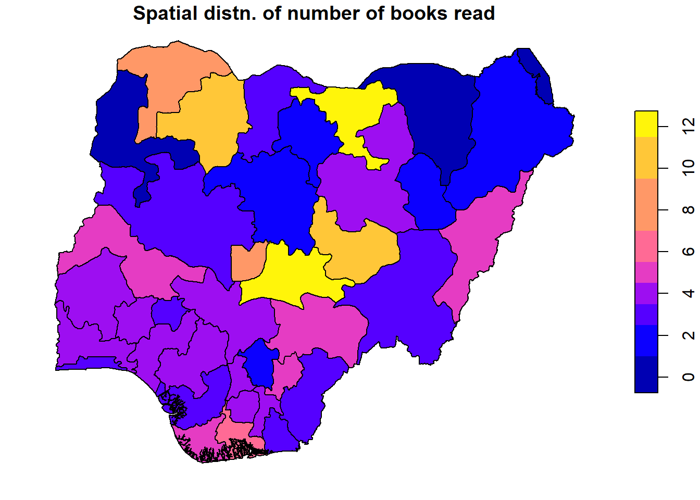
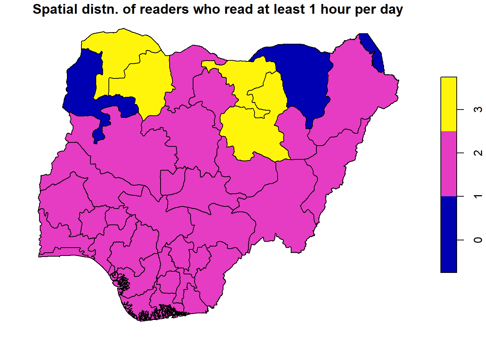

In this blog, I will demonstrate how to perform spatial data analysis using R, focusing on techniques for exploring and modeling spatial relationships in your data. You’ll learn how to handle spatial data, visualize spatial patterns, and apply spatial econometric models to gain deeper insights into spatial dependencies. Case study: Reading Culture Among Higher Education Students in Southwestern Nigeria.
Introduction
Spatial econometrics is a branch of econometrics that deals with the modeling and analysis of spatially dependent data. In traditional econometrics, observations are often assumed to be independent of each other, but in spatial econometrics, it is recognized that observations from nearby locations can influence each other, creating spatial dependence.
This analysis incorporates spatial relationships into models through spatial weights matrices, which define the structure of these dependencies. Two common forms of spatial dependence are spatial lag (where the value of a variable in one location depends on the values of the same variable in nearby locations) and spatial error (where errors in one location are correlated with errors in nearby locations).
Spatial econometrics is especially useful in fields like regional economics, real estate, environmental studies, and geography, where spatial factors significantly impact the relationships being studied. It allows for more accurate modeling and understanding of phenomena such as housing prices, land use, and even the spread of diseases, taking into account the spatial proximity of observations.
Load the necessary libraries
Reading shape file containing the data
## Reading shape file containing the data
reading = st_read("reading_cultre.shp",quiet = TRUE)
names(reading) #show variable names#> [1] "ID_0" "ISO" "NAME_0" "ID_1" "NAME_1"
#> [6] "TYPE_1" "ENGTYPE_1" "NL_NAME_1" "VARNAME_1" "reading_hr"
#> [11] "books_read" "cgpa" "love_readi" "met_standa" "finis_book"
#> [16] "long" "lat" "geometry"summary(reading)#> ID_0 ISO NAME_0 ID_1
#> Min. :163 Length:38 Length:38 Min. : 1.00
#> 1st Qu.:163 Class :character Class :character 1st Qu.:10.25
#> Median :163 Mode :character Mode :character Median :19.50
#> Mean :163 Mean :19.50
#> 3rd Qu.:163 3rd Qu.:28.75
#> Max. :163 Max. :38.00
#> NAME_1 TYPE_1 ENGTYPE_1 NL_NAME_1
#> Length:38 Length:38 Length:38 Length:38
#> Class :character Class :character Class :character Class :character
#> Mode :character Mode :character Mode :character Mode :character
#>
#>
#>
#> VARNAME_1 reading_hr books_read cgpa
#> Length:38 Min. :0.000 Min. : 0.000 Min. :0.000
#> Class :character 1st Qu.:2.250 1st Qu.: 3.000 1st Qu.:2.962
#> Mode :character Median :2.735 Median : 4.000 Median :3.085
#> Mean :2.753 Mean : 4.395 Mean :2.904
#> 3rd Qu.:3.060 3rd Qu.: 5.000 3rd Qu.:3.413
#> Max. :6.000 Max. :12.000 Max. :3.930
#> love_readi met_standa finis_book long
#> Min. :0.000 Min. :0.000 Min. :0.000 Min. : 3.474
#> 1st Qu.:2.000 1st Qu.:2.000 1st Qu.:2.000 1st Qu.: 5.672
#> Median :2.000 Median :2.000 Median :2.000 Median : 7.314
#> Mean :1.974 Mean :1.947 Mean :1.895 Mean : 7.556
#> 3rd Qu.:2.000 3rd Qu.:2.000 3rd Qu.:2.000 3rd Qu.: 8.705
#> Max. :3.000 Max. :3.000 Max. :3.000 Max. :14.450
#> lat geometry
#> Min. : 4.772 MULTIPOLYGON :38
#> 1st Qu.: 6.525 epsg:4326 : 0
#> Median : 8.089 +proj=long...: 0
#> Mean : 8.597
#> 3rd Qu.:10.686
#> Max. :13.110head(reading)plot(reading)
class(reading)#> [1] "sf" "data.frame"str(reading)#> Classes 'sf' and 'data.frame': 38 obs. of 18 variables:
#> $ ID_0 : num 163 163 163 163 163 163 163 163 163 163 ...
#> $ ISO : chr "NGA" "NGA" "NGA" "NGA" ...
#> $ NAME_0 : chr "Nigeria" "Nigeria" "Nigeria" "Nigeria" ...
#> $ ID_1 : num 1 2 3 4 5 6 7 8 9 10 ...
#> $ NAME_1 : chr "Abia" "Adamawa" "Akwa Ibom" "Anambra" ...
#> $ TYPE_1 : chr "State" "State" "State" "State" ...
#> $ ENGTYPE_1 : chr "State" "State" "State" "State" ...
#> $ NL_NAME_1 : chr NA NA NA NA ...
#> $ VARNAME_1 : chr NA NA NA NA ...
#> $ reading_hr: num 3.06 2.06 2.2 2.66 2.75 2.25 3.06 2 3.5 2.42 ...
#> $ books_read: num 4 5 3 4 4 5 5 2 3 3 ...
#> $ cgpa : num 3.01 2.69 3.52 3.43 3.13 2.76 3.13 2 3.51 3.5 ...
#> $ love_readi: num 2 3 2 2 2 3 2 1 2 2 ...
#> $ met_standa: num 2 2 2 2 3 2 2 2 2 2 ...
#> $ finis_book: num 2 2 2 2 2 2 2 1 2 2 ...
#> $ long : num 7.52 12.4 7.85 6.94 9.99 ...
#> $ lat : num 5.46 9.32 4.91 6.23 10.78 ...
#> $ geometry :sfc_MULTIPOLYGON of length 38; first list element: List of 1
#> ..$ :List of 1
#> .. ..$ : num [1:302, 1:2] 7.51 7.52 7.53 7.53 7.53 ...
#> ..- attr(*, "class")= chr [1:3] "XY" "MULTIPOLYGON" "sfg"
#> - attr(*, "sf_column")= chr "geometry"
#> - attr(*, "agr")= Factor w/ 3 levels "constant","aggregate",..: NA NA NA NA NA NA NA NA NA NA ...
#> ..- attr(*, "names")= chr [1:17] "ID_0" "ISO" "NAME_0" "ID_1" ...st_is_longlat(reading) # checking whether the geographical coordinates have been #> [1] TRUE#projected (the result TRUE means not)
st_crs(reading) #checking which mapping was applied#> Coordinate Reference System:
#> User input: WGS 84
#> wkt:
#> GEOGCRS["WGS 84",
#> DATUM["World Geodetic System 1984",
#> ELLIPSOID["WGS 84",6378137,298.257223563,
#> LENGTHUNIT["metre",1]]],
#> PRIMEM["Greenwich",0,
#> ANGLEUNIT["degree",0.0174532925199433]],
#> CS[ellipsoidal,2],
#> AXIS["latitude",north,
#> ORDER[1],
#> ANGLEUNIT["degree",0.0174532925199433]],
#> AXIS["longitude",east,
#> ORDER[2],
#> ANGLEUNIT["degree",0.0174532925199433]],
#> ID["EPSG",4326]]table(st_is_valid(reading)) # validation#>
#> TRUE
#> 38#> [1] "SpatialPolygonsDataFrame"
#> attr(,"package")
#> [1] "sp"reading_points<-st_cast(reading$geometry, "MULTIPOINT")reading_points_count<-sapply(reading_points, length)
sum(reading_points_count) # Checking how many vertices are in all counties#> [1] 401800reading_simple<-st_simplify(reading, dTolerance = 50)reading_simple_points<-st_cast(reading_simple$geometry, "MULTIPOINT")
sum(sapply(reading_simple_points, length))#> [1] 73496reading_central<-st_centroid(reading)plot(st_geometry(reading))
reading_central<-st_centroid(reading)
plot(reading_central$geometry, add=TRUE, pch=20, col="red")


ggplot() + geom_sf(data=reading_simple, aes(fill=reading_hr)) +
geom_sf(data=reading_central, col="red") + theme_bw()
ggplot() + geom_sf(data=reading_simple, aes(fill=books_read)) +
geom_sf(data=reading_central, col="red") + theme_bw()
reading_sf = st_read("reading_cultre.shp") #shape file earlier created#> Reading layer `reading_cultre' from data source
#> `C:\Users\user\Desktop\softdataconsult.github.io\blog\posts\spatial\reading_cultre.shp'
#> using driver `ESRI Shapefile'
#> Simple feature collection with 38 features and 17 fields
#> Geometry type: MULTIPOLYGON
#> Dimension: XY
#> Bounding box: xmin: 2.668431 ymin: 4.270418 xmax: 14.67642 ymax: 13.89201
#> Geodetic CRS: WGS 84plot(reading_sf)
names(reading)#> [1] "ID_0" "ISO" "NAME_0" "ID_1" "NAME_1"
#> [6] "TYPE_1" "ENGTYPE_1" "NL_NAME_1" "VARNAME_1" "reading_hr"
#> [11] "books_read" "cgpa" "love_readi" "met_standa" "finis_book"
#> [16] "long" "lat" "geometry"reading_sf = st_read("reading_cultre.shp") #shape file earlier created#> Reading layer `reading_cultre' from data source
#> `C:\Users\user\Desktop\softdataconsult.github.io\blog\posts\spatial\reading_cultre.shp'
#> using driver `ESRI Shapefile'
#> Simple feature collection with 38 features and 17 fields
#> Geometry type: MULTIPOLYGON
#> Dimension: XY
#> Bounding box: xmin: 2.668431 ymin: 4.270418 xmax: 14.67642 ymax: 13.89201
#> Geodetic CRS: WGS 84plot(reading_sf["reading_hr"],
main = "Spatial distn. of students' reading hour",
breaks = "quantile")
reading_sf = st_read("reading_cultre.shp") #shape file earlier created#> Reading layer `reading_cultre' from data source
#> `C:\Users\user\Desktop\softdataconsult.github.io\blog\posts\spatial\reading_cultre.shp'
#> using driver `ESRI Shapefile'
#> Simple feature collection with 38 features and 17 fields
#> Geometry type: MULTIPOLYGON
#> Dimension: XY
#> Bounding box: xmin: 2.668431 ymin: 4.270418 xmax: 14.67642 ymax: 13.89201
#> Geodetic CRS: WGS 84plot(reading_sf["books_read"],
main = "Spatial distn. of number of books read",
breaks = "quantile")
#legend("topright", legend = "books_read", fill = topo.colors(5))reading_sf <- st_read("reading_cultre.shp")#> Reading layer `reading_cultre' from data source
#> `C:\Users\user\Desktop\softdataconsult.github.io\blog\posts\spatial\reading_cultre.shp'
#> using driver `ESRI Shapefile'
#> Simple feature collection with 38 features and 17 fields
#> Geometry type: MULTIPOLYGON
#> Dimension: XY
#> Bounding box: xmin: 2.668431 ymin: 4.270418 xmax: 14.67642 ymax: 13.89201
#> Geodetic CRS: WGS 84plot(reading_sf["cgpa"], main = "Spatial Distribution of Students' CGPA", breaks = "quantile")# Add a legend
#legend("topright", legend = "CGPA", fill = topo.colors(5))reading_sf = st_read("reading_cultre.shp") #shape file earlier created#> Reading layer `reading_cultre' from data source
#> `C:\Users\user\Desktop\softdataconsult.github.io\blog\posts\spatial\reading_cultre.shp'
#> using driver `ESRI Shapefile'
#> Simple feature collection with 38 features and 17 fields
#> Geometry type: MULTIPOLYGON
#> Dimension: XY
#> Bounding box: xmin: 2.668431 ymin: 4.270418 xmax: 14.67642 ymax: 13.89201
#> Geodetic CRS: WGS 84plot(reading_sf["love_readi"],
main = "Spatial distn. of students who love reading",
breaks = "quantile")
#legend("topright", legend = "Love reading", fill = topo.colors(5))reading_sf = st_read("reading_cultre.shp") #shape file earlier created#> Reading layer `reading_cultre' from data source
#> `C:\Users\user\Desktop\softdataconsult.github.io\blog\posts\spatial\reading_cultre.shp'
#> using driver `ESRI Shapefile'
#> Simple feature collection with 38 features and 17 fields
#> Geometry type: MULTIPOLYGON
#> Dimension: XY
#> Bounding box: xmin: 2.668431 ymin: 4.270418 xmax: 14.67642 ymax: 13.89201
#> Geodetic CRS: WGS 84plot(reading_sf["met_standa"],
main = "Spatial distn. of readers who read at least 1 hour per day",
breaks = "quantile")
reading_sf = st_read("reading_cultre.shp") #shape file earlier created#> Reading layer `reading_cultre' from data source
#> `C:\Users\user\Desktop\softdataconsult.github.io\blog\posts\spatial\reading_cultre.shp'
#> using driver `ESRI Shapefile'
#> Simple feature collection with 38 features and 17 fields
#> Geometry type: MULTIPOLYGON
#> Dimension: XY
#> Bounding box: xmin: 2.668431 ymin: 4.270418 xmax: 14.67642 ymax: 13.89201
#> Geodetic CRS: WGS 84plot(reading_sf["finis_book"],
main = "Spatial distn. of readers who finished their last book",
breaks = "quantile")
Six maps in one frame
#> Reading layer `reading_cultre' from data source
#> `C:\Users\user\Desktop\softdataconsult.github.io\blog\posts\spatial\reading_cultre.shp'
#> using driver `ESRI Shapefile'
#> Simple feature collection with 38 features and 17 fields
#> Geometry type: MULTIPOLYGON
#> Dimension: XY
#> Bounding box: xmin: 2.668431 ymin: 4.270418 xmax: 14.67642 ymax: 13.89201
#> Geodetic CRS: WGS 84# Set up a 2x3 layout with tmap
tm_layout <- tm_layout(title = c("Reading Hour", "Books Read", "CGPA", "Love Reading", "At least 1 hr/day", "Finished last book"),
frame = FALSE,
asp = 0) # Set aspect ratio to 0 for individual map customization
# Plot the first map
tm1 <- tm_shape(reading_sf) +
tm_borders() +
tm_fill("reading_hr", title = "Reading Hour", style = "quantile")
# Plot the second map
tm2 <- tm_shape(reading_sf) +
tm_borders() +
tm_fill("books_read", title = "Number of Books Read", style = "quantile")
# Plot the third map
tm3 <- tm_shape(reading_sf) +
tm_borders() +
tm_fill("cgpa", title = "CGPA", style = "quantile")
# Plot the fourth map
tm4 <- tm_shape(reading_sf) +
tm_borders() +
tm_fill("love_readi", title = "Love Reading", style = "quantile")
# Plot the fifth map
tm5 <- tm_shape(reading_sf) +
tm_borders() +
tm_fill("met_standa", title = "At least 1 hr/day", style = "quantile")
# Plot the sixth map
tm6 <- tm_shape(reading_sf) +
tm_borders() +
tm_fill("finis_book", title = "Finished last book", style = "quantile")
# Display the maps in a 2x3 layout
tmap_arrange(list(tm1, tm2, tm3, tm4, tm5, tm6), layout = tm_layout)# read the data from excel for other analysis
reading_data <- read.csv("reading_culture_coordinates.csv")#define our regression equation so we don't have to type it each time
reg.eq1=reading_hr ~ books_read + cgpa + love_readi + met_standa + finis_book
reg1=lm(reg.eq1,data=reading)Spatial weights matrix W
# Create a spatial weights matrix (queen contiguity)
listw <- mat2listw(matrix(rbinom(nrow(reading_data)^2, 1, 0.2), nrow(reading_data)))
listw#> Characteristics of weights list object:
#> Neighbour list object:
#> Number of regions: 38
#> Number of nonzero links: 286
#> Percentage nonzero weights: 19.80609
#> Average number of links: 7.526316
#> Non-symmetric neighbours list
#>
#> Weights style: M
#> Weights constants summary:
#> n nn S0 S1 S2
#> M 38 1444 286 352 8872lm.morantest
lm.morantest(reg1, listw )#>
#> Global Moran I for regression residuals
#>
#> data:
#> model: lm(formula = reg.eq1, data = reading)
#> weights: listw
#>
#> Moran I statistic standard deviate = 2.2349, p-value = 0.01271
#> alternative hypothesis: greater
#> sample estimates:
#> Observed Moran I Expectation Variance
#> 0.079731616 -0.035587780 0.002662569Let’s run the Four simplest models: OLS, SLX, Lag Y, and Lag Error
OLS model
library(spdep)
library(spatialreg)
reg1=lm(reg.eq1,data=reading)
reg1b=lm(reading_hr ~ books_read + cgpa + love_readi + met_standa + finis_book, data=reading)
summary(reg1)#>
#> Call:
#> lm(formula = reg.eq1, data = reading)
#>
#> Residuals:
#> Min 1Q Median 3Q Max
#> -1.5992 -0.5211 -0.1218 0.1665 3.3228
#>
#> Coefficients:
#> Estimate Std. Error t value Pr(>|t|)
#> (Intercept) 0.07031 0.51720 0.136 0.8927
#> books_read 0.07339 0.08281 0.886 0.3821
#> cgpa 0.76432 0.33255 2.298 0.0282 *
#> love_readi 0.30082 0.49804 0.604 0.5501
#> met_standa 0.53481 0.57056 0.937 0.3556
#> finis_book -0.78873 0.61250 -1.288 0.2071
#> ---
#> Signif. codes: 0 '***' 0.001 '**' 0.01 '*' 0.05 '.' 0.1 ' ' 1
#>
#> Residual standard error: 0.9277 on 32 degrees of freedom
#> Multiple R-squared: 0.4904, Adjusted R-squared: 0.4108
#> F-statistic: 6.159 on 5 and 32 DF, p-value: 0.000419summary(reg1b)#>
#> Call:
#> lm(formula = reading_hr ~ books_read + cgpa + love_readi + met_standa +
#> finis_book, data = reading)
#>
#> Residuals:
#> Min 1Q Median 3Q Max
#> -1.5992 -0.5211 -0.1218 0.1665 3.3228
#>
#> Coefficients:
#> Estimate Std. Error t value Pr(>|t|)
#> (Intercept) 0.07031 0.51720 0.136 0.8927
#> books_read 0.07339 0.08281 0.886 0.3821
#> cgpa 0.76432 0.33255 2.298 0.0282 *
#> love_readi 0.30082 0.49804 0.604 0.5501
#> met_standa 0.53481 0.57056 0.937 0.3556
#> finis_book -0.78873 0.61250 -1.288 0.2071
#> ---
#> Signif. codes: 0 '***' 0.001 '**' 0.01 '*' 0.05 '.' 0.1 ' ' 1
#>
#> Residual standard error: 0.9277 on 32 degrees of freedom
#> Multiple R-squared: 0.4904, Adjusted R-squared: 0.4108
#> F-statistic: 6.159 on 5 and 32 DF, p-value: 0.000419lm.morantest(reg1,listw)#>
#> Global Moran I for regression residuals
#>
#> data:
#> model: lm(formula = reg.eq1, data = reading)
#> weights: listw
#>
#> Moran I statistic standard deviate = 2.2349, p-value = 0.01271
#> alternative hypothesis: greater
#> sample estimates:
#> Observed Moran I Expectation Variance
#> 0.079731616 -0.035587780 0.002662569#lm.moranplot(reg1,listw1)
lm.LMtests(reg1,listw,test=c("LMerr", "LMlag", "RLMerr", "RLMlag", "SARMA"))#>
#> Rao's score (a.k.a Lagrange multiplier) diagnostics for spatial
#> dependence
#>
#> data:
#> model: lm(formula = reg.eq1, data = reading)
#> test weights: listw
#>
#> RSerr = 1.4772, df = 1, p-value = 0.2242
#>
#>
#> Rao's score (a.k.a Lagrange multiplier) diagnostics for spatial
#> dependence
#>
#> data:
#> model: lm(formula = reg.eq1, data = reading)
#> test weights: listw
#>
#> RSlag = 1.2523, df = 1, p-value = 0.2631
#>
#>
#> Rao's score (a.k.a Lagrange multiplier) diagnostics for spatial
#> dependence
#>
#> data:
#> model: lm(formula = reg.eq1, data = reading)
#> test weights: listw
#>
#> adjRSerr = 0.711, df = 1, p-value = 0.3991
#>
#>
#> Rao's score (a.k.a Lagrange multiplier) diagnostics for spatial
#> dependence
#>
#> data:
#> model: lm(formula = reg.eq1, data = reading)
#> test weights: listw
#>
#> adjRSlag = 0.48608, df = 1, p-value = 0.4857
#>
#>
#> Rao's score (a.k.a Lagrange multiplier) diagnostics for spatial
#> dependence
#>
#> data:
#> model: lm(formula = reg.eq1, data = reading)
#> test weights: listw
#>
#> SARMA = 1.9633, df = 2, p-value = 0.3747SLX (Spatial Lag Model with Exogenous Variables)
# Assuming your data is named 'your_data'
# Load required packages
library(spatialreg)
# Create an 'sf' object with the spatial coordinates
reading_sf_data <- st_as_sf(reading_data, coords = c("long", "lat"))
# Create a spatial weights matrix (queen contiguity)
listw <- mat2listw(matrix(rbinom(nrow(reading_data)^2, 1, 0.2), nrow(reading_data)))